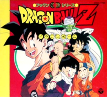

Dragon Ball Z picks up five years after the end of the Dragon Ball anime, with Goku as a young adult and father to his son Gohan. A humanoid alien named Raditz arrives on Earth in a spacecraft and tracks down Goku, revealing to him that he is his long-lost big brother and that they are members of a nearly extinct extraterrestrial race called the Saiyans (サイヤ人 Saiya-jin?). The Saiyans had sent Goku (originally named "Kakarrot") to Earth as an infant to conquer the planet for them, but he suffered a severe head injury soon after his arrival and lost all memory of his mission, as well as his blood-thirsty Saiyan nature. Goku refuses to help Raditz continue the mission, which results in Raditz kidnapping Gohan. Goku decides to team up with his former enemy Piccolo in order to defeat Raditz and save his son, while sacrificing his own life in the process. In the afterlife, Goku trains under King Kai until he is revived by the Dragon Balls a year later in order to save the Earth from Raditz' comrades; Nappa and the Saiyan prince Vegeta. During the battle Piccolo is killed, along with Goku's allies Yamcha, Tien Shinhan and Chiaotzu, and the Dragon Balls cease to exist because of Piccolo's death. Goku arrives at the battlefield late, but avenges his fallen friends by defeating Nappa with his new level of power. Vegeta himself enters into the battle with Goku and after numerous clashes Goku manages to defeat him as well, with the help of Gohan and his best friend Krillin. At Goku's request, they spare Vegeta's life and allow him to escape Earth. During the battle, Krillin overhears Vegeta mentioning the original set of Dragon Balls from Piccolo's home planet Namek (ナメック星 Namekku-sei?). While Goku recovers from his injuries at the hospital, Gohan, Krillin and Goku's oldest friend Bulma depart for Namek in order to use these Dragon Balls to revive their dead friends. However, they discover that Vegeta's superior, the galactic tyrant Lord Frieza, is already there, seeking the Dragon Balls to be granted eternal life. A fully healed Vegeta arrives on Namek as well, seeking the Dragon Balls for himself, which leads to several battles between him and Frieza's henchmen. Realizing he is overpowered, Vegeta teams up with Gohan and Krillin to fight the Ginyu Force, a team of mercenaries summoned by Frieza. After Goku finally arrives on Namek, the epic battle with Frieza himself comes to a close when Goku transforms into a fabled Super Saiyan (超サイヤ人 Sūpā Saiya-jin?) and defeats him. Upon his return to Earth a year later, Goku encounters a time traveler named Trunks, the future son of Bulma and Vegeta, who warns Goku that two Androids (人造人間 Jinzōningen?, "Artificial Humans") will appear three years later, seeking revenge against Goku for destroying the Red Ribbon Army when he was a child. During this time, an evil life form called Cell emerges and after absorbing two of the Androids to achieve his "perfect form," holds his own fighting tournament to decide the fate of the Earth. After Goku sacrifices his own life a second time, to no avail, Gohan avenges his father by defeating Cell after ascending to the second level of Super Saiyan. Seven years later Goku, who has been briefly revived for one day and meets his youngest son Goten, and his allies are drawn into a fight against a magical being named Majin Buu. After numerous battles resulting in the destruction and recreation of the Earth, Goku (whose life is permanently restored by the Elder Kai) destroys Kid Buu with a "Spirit Bomb" attack containing the energy of everyone on Earth. Goku makes a wish for Kid Buu to be reincarnated as a good person and ten years later, at another martial arts tournament, Goku meets Kid Buu's human reincarnation, Uub. Leaving the match between them unfinished, Goku departs with Uub to train him to become Earth's new guardian.
